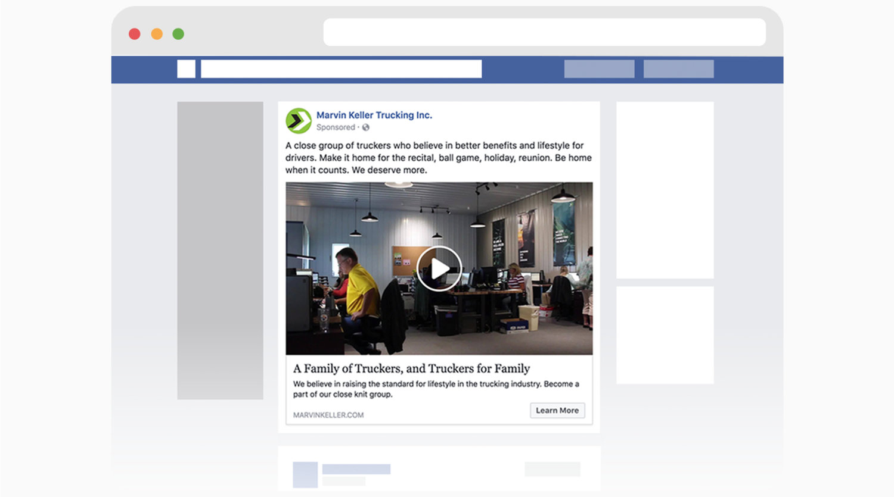

Social Media Ads, Creative Development
I was tasked to come up with rebranding strategy for Marvin Keller Trucking, to tell its story with a personal spark and saturate company culture with new brand components to ultimately increase outreach. By the end, I had laid the groundwork for future rebranding initiatives to follow through.
High turnover rates are common in the trucking industry, but unseated trucks have a high opportunity cost. The company needed a new solution that targeted the driving force and organized Marvin Keller’s brand promises to increase recruiting and retention.
I led a series of team discussions to collaborate with managers from every department to get feedback on current brand components, hash out old strategies, and align the whole company with the new brand idea. Through this process I determined the primary selling points of the brand:
We were able to provide deeper relationships with drivers because we were small, we were going above and beyond in planning and operations to provide driver schedule flexibility, and many of the workforce had prior experience as truckers.
My research started with the fair trade social movement, where the goal was to help develop countries have better coffee trading conditions by promising to pay a floor price for the product. My idea was attribute this idea to rebrand the company as a close knit group of truckers who are fighting for the cause of raising the quality of life for drivers.
The main thrust of the campaign was the idea of a "Marvin Keller Group”, a close-knit group of truckers who knows the difficulties of the industry but wants to provide a safe haven and community to raise the quality of life for drivers across the industry.
I started a video ad campaign on Facebook and Instagram targeting prospective drivers through Facebook Ad Manager. The goal was driver leads, and cost per result for 2 months ended up being around $0.91 which was far under budget.